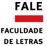

|
|
Informações gerais [Informazioni generali - General information]
|
|
| Coordenador [Coordinatore - Principal investigator] |
Prof. Evandro L. T. Paradela Cunha, cunhae@letras.ufmg.br Faculdade de Letras, Universidade Federal de Minas Gerais (UFMG) |
Resumo [Riassunto - Abstract] |
[PT] O projeto de pesquisa Lita-Bra tem o objetivo de estudar, a partir de diferentes perspectivas (linguísticas, históricas e sociais), o uso de variedades linguísticas provenientes do território italiano no Brasil. O nome Línguas Italianas no Brasil enfatiza a diversidade linguística da península itálica e, sobretudo, a presença de diferentes línguas e dialetos italianos (e não apenas o italiano padrão) no território brasileiro. Em particular, dá-se especial atenção ao uso dessas variedades linguísticas no estado de Minas Gerais, tema que tem sido insuficientemente pesquisado apesar da grande penetração italiana nesse estado. [IT] Il progetto di ricerca Lita-Bra ha l'obiettivo di studiare, a partire da diverse prospettive (linguistiche, storiche e sociali), l'uso di varietà linguistiche provenienti dal territorio italiano in Brasile. Il nome Lingue Italiane in Brasile enfatizza la diversità linguistica della penisola italica e, soprattutto, la presenza di diverse lingue e dialetti italiani (e non solo l'italiano standard) nel territorio brasiliano. In particolare, si presta speciale attenzione all'uso di queste varietà linguistiche nello stato di Minas Gerais, un argomento ancora insufficientemente ricercato nonostante la grande penetrazione italiana in questo stato. [EN] The research project Lita-Bra has the goal of studying, from different perspectives (linguistic, historical and social), the use of linguistic varieties originating from the Italian territory in Brazil. The name Italian Languages in Brazil emphasizes the linguistic diversity of the Italian peninsula and, above all, the presence of different Italian languages and dialects (and not only standard Italian) in the Brazilian territory. In particular, special attention is paid to the use of these linguistic varieties in the state of Minas Gerais, a topic that has been insufficiently researched despite the great Italian penetration in this state. |
| Pesquisas atuais [Ricerche in corso - Current research] |
[1] O talian na web [Il talian sul web - Talian on the web] [2] Línguas italianas como línguas de imigração e de herança em Minas Gerais [Lingue italiane come lingue di immigrazione e di eredità in Minas Gerais - Italian languages as immigration and heritage languages in Minas Gerais] [3] Periódicos italianos em Belo Horizonte no início do século XX [Periodici italiani a Belo Horizonte all'inizio del XX secolo - Italian periodicals in Belo Horizonte in the beginning of the 20th century] |
| Produtos de pesquisa [Produzione di ricerca - Research output] |
Publicações [Pubblicazioni - Publications] CORDEIRO, Maryelle J.; LOURENÇO, Lorenza; CUNHA, Evandro L. T. P. Toponímia transplantada de origem italiana no Brasil: o caso do modificador "novo". Caligrama: Revista de Estudos Românicos, v. 26, n. 1, p. 69-94, 2021. DOI: http://dx.doi.org/10.17851/2238-3824.26.1.69-94CUNHA, Evandro L. T. P.; LOURENÇO, Lorenza. Letteratura di immigrati: composições poéticas publicadas na imprensa italiana belo-horizontina no início do século XX. Revista da Imigração Italiana em Minas Gerais, Belo Horizonte, 2019. Disponível em: https://homepages.dcc.ufmg.br/~evandrocunha/pubs/pdfs/cunha2019_letteratura-immigrati_riimg.pdf Apresentações [Presentazioni - Presentations] CUNHA, Evandro L. T. P. Designing and building a web corpus of Talian (Brazilian Venetian language). 54th Annual Meeting of the Societas Linguistica Europaea (workshop "Italian heritage language communities: multiple perspectives"), online, 2021.CUNHA, Evandro L. T. P.; LOURENÇO, Lorenza. O esporte na imprensa italiana belo-horizontina no início do século XX. 10° Seminário da Imigração Italiana em Minas Gerais, online, 2020. |
|
Pesquisas atuais [Ricerche in corso - Current research] (2021-2024)
| ||||
| [1] O talian na web [Il talian sul web - Talian on the web] | Resumo [Riassunto - Abstract] |
[PT] O talian é uma língua falada em algumas das regiões do Brasil que receberam um grande fluxo migratório proveniente da Itália no fim do século XIX e no início do século XX. Esta pesquisa visa coletar, documentar e analisar manifestações linguísticas produzidas em talian em ambientes virtuais, contribuindo não apenas para seu registro, mas também para o enriquecimento da compreensão sobre seu uso no Brasil. Será compilado um corpus do talian na web, que, posteriormente, será empregado para o estudo dos efeitos do contato entre essa língua e o português brasileiro. [IT] Il talian è una lingua parlata in alcune delle regioni del Brasile che hanno ricevuto un grande flusso migratorio dall'Italia tra la fine del XIX e l'inizio del XX secolo. Questa ricerca mira a raccogliere, documentare e analizzare manifestazioni linguistiche prodotte in talian in ambienti virtuali, contribuendo non solo alla sua registrazione, ma anche ad arricchire la comprensione del suo uso in Brasile. Verrà compilato un corpus del talian sul web, che sarà poi utilizzato per studiare gli effetti del contatto tra questa lingua e il portoghese brasiliano. [EN] Talian is a language spoken in some of the regions of Brazil that received a large migratory flow from Italy in the late 19th and early 20th centuries. This research aims to collect, document and analyze linguistic manifestations produced in Talian in virtual environments, contributing not only to its preservation, but also to enriching the understanding of its use in Brazil. A corpus of Talian on the web will be compiled, and it will be used to study the effects of the contact between this language and Brazilian Portuguese. |
||
| [2] Línguas italianas como línguas de imigração e de herança em Minas Gerais [Lingue italiane come lingue di immigrazione e di eredità in Minas Gerais - Italian languages as immigration and heritage languages in Minas Gerais] | Resumo [Riassunto - Abstract] |
[PT] Segundo Frosi e Raso, "é insuficientemente explorada a influência cultural italiana em Minas Gerais, onde a penetração numérica de italianos é menor somente do que aquela do Estado de São Paulo" (O italiano no Brasil: um caso de contato linguístico e cultural, 2011, p. 320). Esta pesquisa tem como objetivo analisar de que forma as línguas italianas foram e são utilizadas pelas comunidades de imigrantes e por seus descendentes em Minas Gerais. [IT] Secondo Frosi e Raso, "non viene sufficientemente esplorata l'influenza culturale italiana in Minas Gerais, dove la penetrazione numerica di italiani è solo inferiore a quella dello Stato di San Paolo" (tradotto da O italiano no Brasil: um caso de contato linguístico e cultural, 2011, p. 320). Questa ricerca si propone di analizzare come le lingue italiane erano e sono utilizzate dalle comunità di immigrati e dai loro discendenti in Minas Gerais. [EN] According to Frosi and Raso, "the Italian cultural influence in Minas Gerais, where the numerical penetration of Italians is only lower than that of the State of São Paulo, is insufficiently explored" (translated from O italiano no Brasil: um caso de contato linguístico e cultural, 2011, p. 320). This research aims to analyze how Italian languages were and are used by immigrant communities and their descendants in Minas Gerais. |
||
| [3] Periódicos italianos em Belo Horizonte no início do século XX [Periodici italiani a Belo Horizonte all'inizio del XX secolo - Italian periodicals in Belo Horizonte in the beginning of the 20th century] | Resumo [Riassunto - Abstract] |
[PT] A Coleção Linhares é um importante acervo de periódicos (jornais, revistas, panfletos etc.) publicados em Belo Horizonte entre os anos de 1895 e 1954. Nesse acervo, se encontram alguns periódicos produzidos pela comunidade de imigrantes italianos na cidade. Esta pesquisa pretende explorar esse material, analisando aspectos linguísticos, discursivos e culturais presentes nos artigos, propagandas e editoriais. [IT] La Collezione Linhares è un'importante raccolta di periodici (giornali, riviste, opuscoli ecc.) pubblicati a Belo Horizonte tra il 1895 e il 1954. In questa raccolta sono presenti alcuni periodici prodotti dalla comunità degli immigrati italiani nella città. Questa ricerca intende esplorare questo materiale, analizzando gli aspetti linguistici, discorsivi e culturali presenti in articoli, pubblicità ed editoriali. [EN] The Linhares Collection is an important collection of periodicals (newspapers, magazines, pamphlets etc.) published in Belo Horizonte between 1895 and 1954. In this collection, there are some periodicals produced by the community of Italian immigrants in the city. This research intends to explore this material, analyzing linguistic, discursive and cultural aspects present in articles, advertisements and editorials. |
||